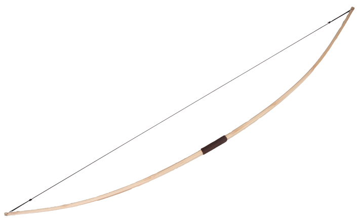
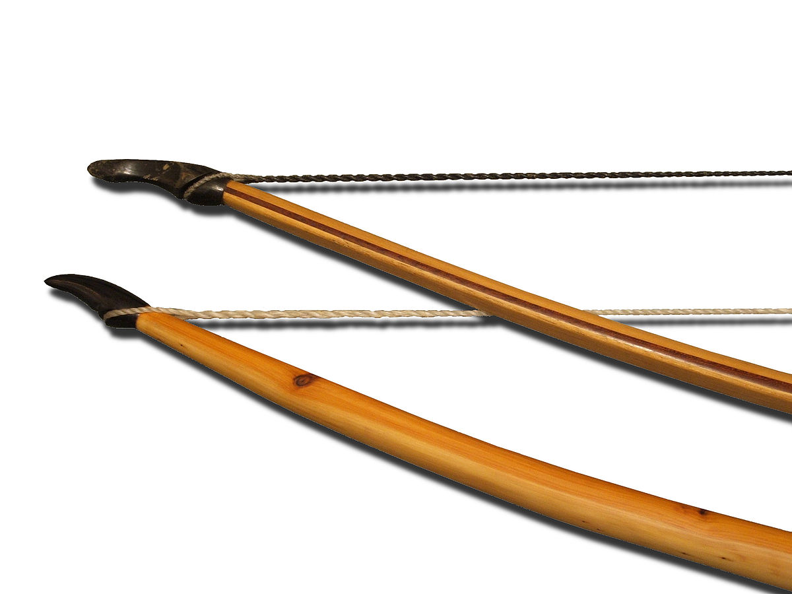
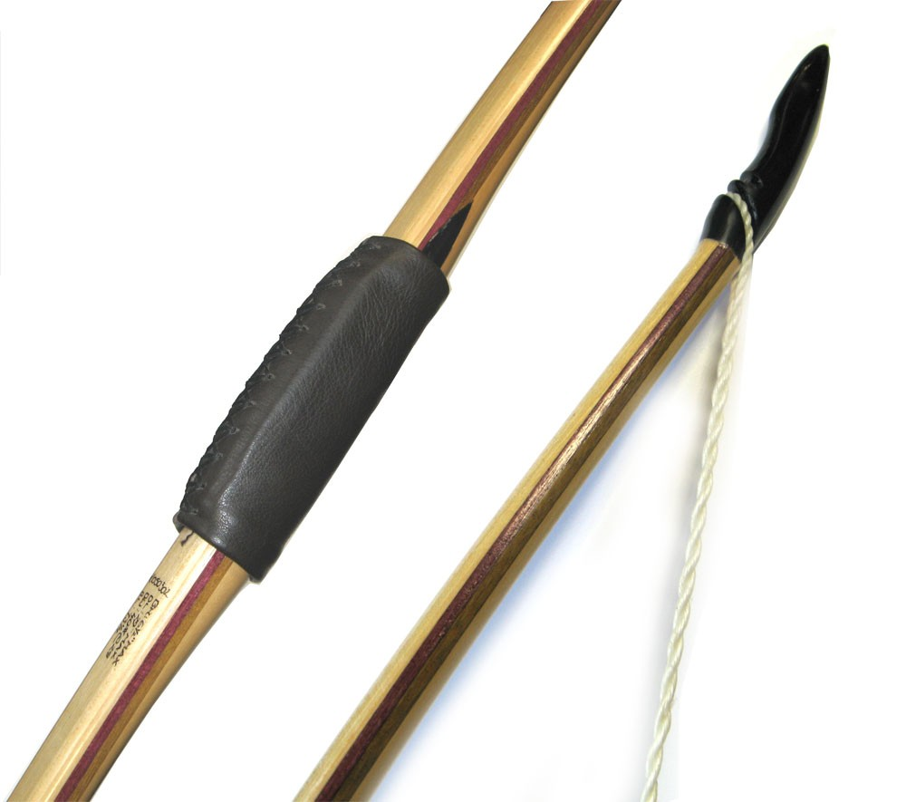
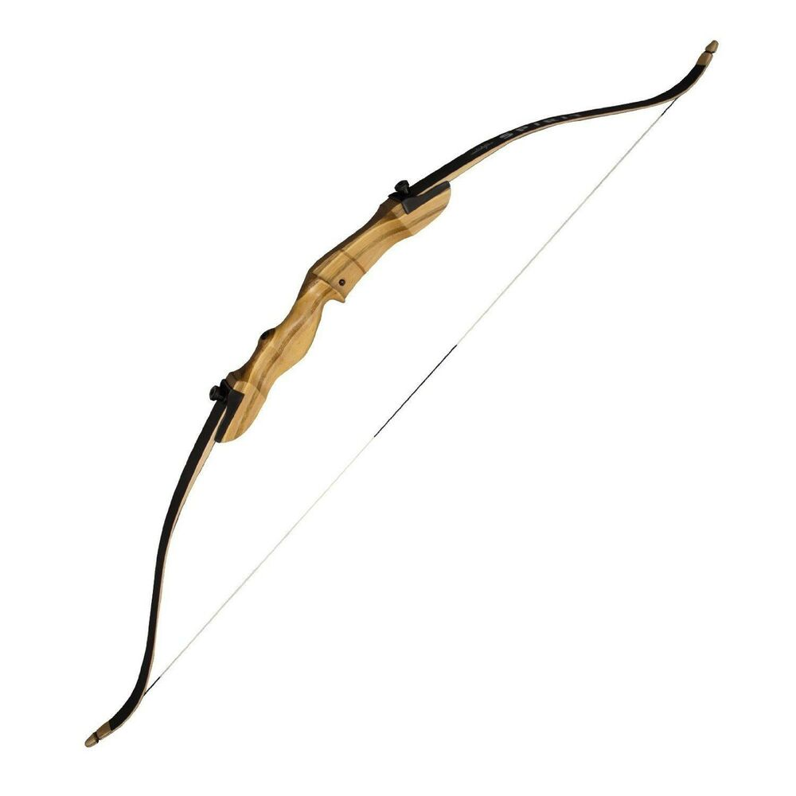
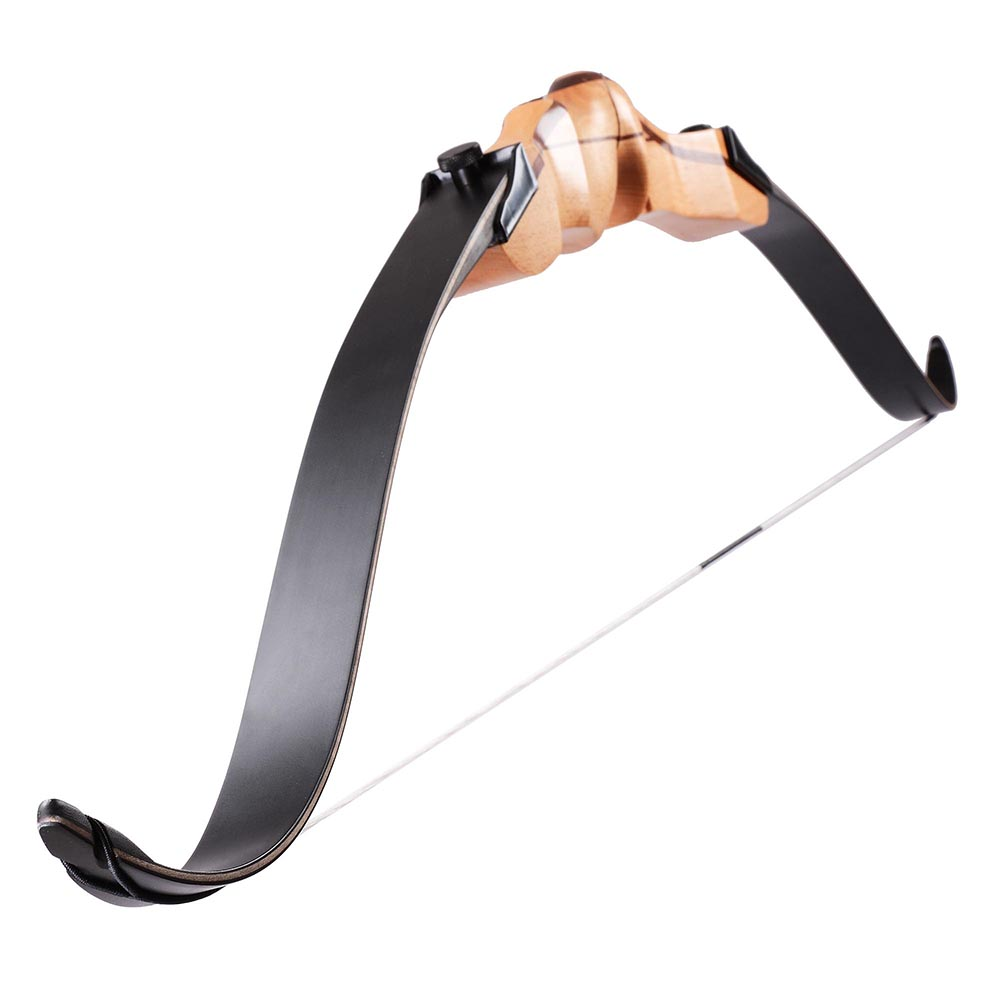
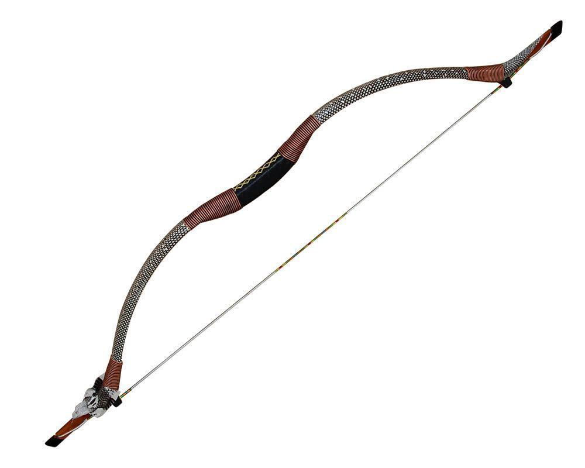
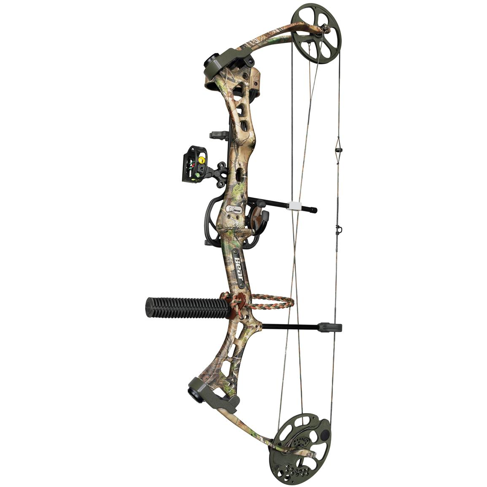
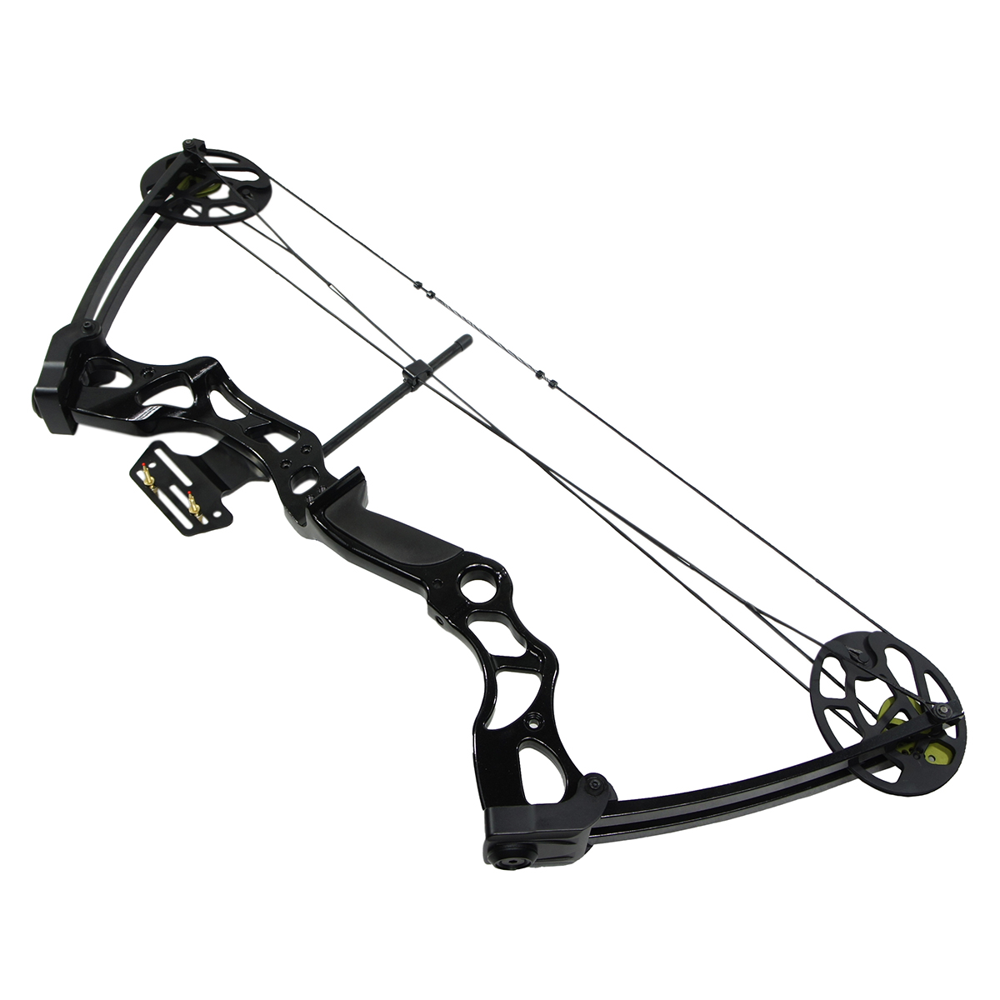
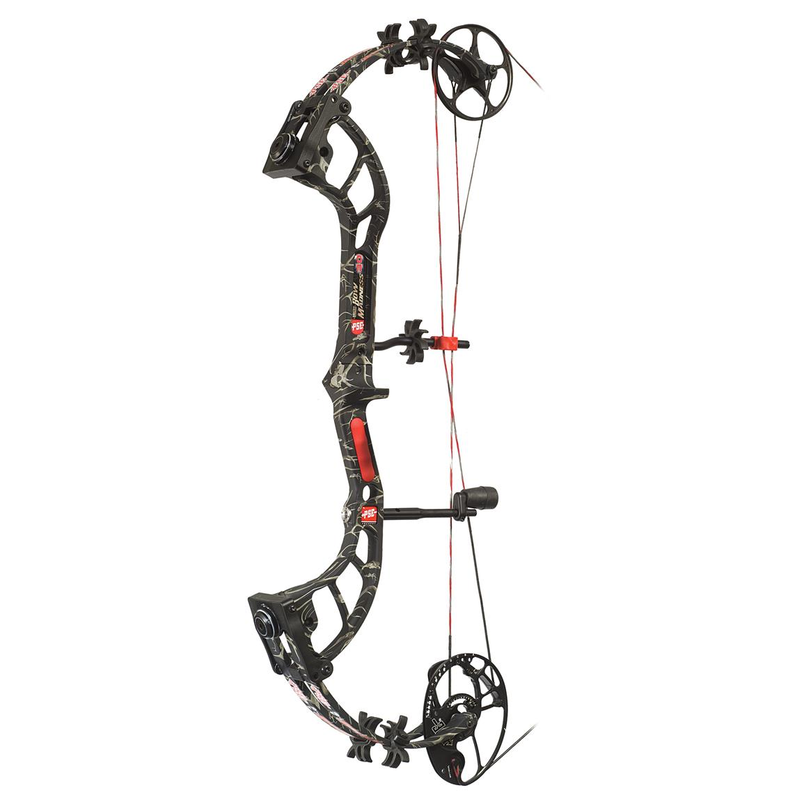

The different bow types:
- A longbow - what Robin Hood was fond of using - is a single curved piece of wood with a highly taught bowstring attached at both ends.
- A recurve bow - and the main bow type we will use in the following pages - is very similar to a longbow. However, instead of the wood being straight at the bow ends the ends of a recurve are curved away from the archer to create more energy.
- The compound bow looks like something out of a science fiction novel! A system of cams and pullies assist the archer while drawing an arrow. With longbows and recurve bows the archer must pull and hold the draw weight of that particular bow throughout the entire draw. With a compund bow the cams and pullies reduce the weight an archer has to hold during a draw by half. This causes increased accuracy and arrows that fly much faster than longbows or recurves.
  
  
  